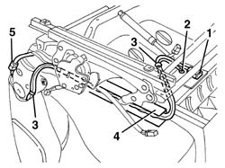
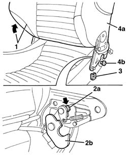
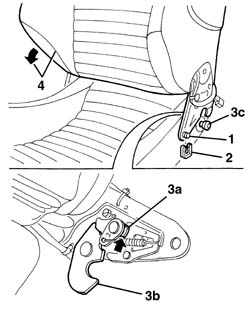

7045A18 FRONT SEAT BACKREST ASSEMBLY (ONE), LEFT OR RIGHT - R.R.
- Path
- Procedures > 70 FITTINGS > 7045 FRONT SEATS > 7045A front seat assembly > 7045A18 FRONT SEAT BACKREST ASSEMBLY (ONE), LEFT OR RIGHT - R.R.
- Kind
- repair procedure (removal / refitting; the operation number is the code)
- Applies to
- engines: 3.2 V6; all production periods
- Interactive page
- https://sloeber94.github.io/elrnDB-a156/en/#/3238859
Applies to: engines: 3.2 V6; all production periods; only with equipment: GTA
 Removing
Removing
 Refitting
RefittingThe backrest contains the side Air Bag module.
7045A10 l/h or r/h front seat (one) - r+r
7045A44 seat interior guard - r r
1. Disconnect the side Air Bag electrical connection from the support under the seat.
2. Disconnect the electrical earth connection from the support under the seat.
3. Disconnect the side Air Bag electrical wiring retaining bands.
4. Extract the side Air Bag electrical wiring from the duct.
5. Disconnect the electrical connection from the heat pad.

Applies to: engines: 3.2 V6; all production periods; only with equipment: GTA
1. Fold the seat over and, using an electric power supply, lower the backrest until it is in the end of travel position.
2. Press the tooth (2a) using a screwdriver on both sides of the seat and release the hooks (2b), releasing them from the pins (2c).
3. Release the retaining springs on both sides of the seat.
4. Remove the backrest (4a), releasing it from the pins (4b).

Applies to: engines: 3.2 V6; all production periods; only with equipment: GTA
Refitting
RemovingCheck that the squab is not damaged.
1. Place the backrest in position attaching it to the pins.
2. Do up the retaining clips
3. Lift up the tooth (3a) on both sides of the seat, then press the hooks (3b) and reattach them to the pins (3c).
4. Using an electric power supply, move the backrest forward.

Applies to: engines: 3.2 V6; all production periods; only with equipment: GTA
Connect the heat pad electrical connection.
Fit the side Air Bag electrical wiring in the duct.
Connect the side Air Bag electrical wiring retaining bands.
Connect the electrical earth connection to the support under the seat.
Connect the side Air Bag electrical connection to the support under the seat.
Topics linked from this page (3)
- 7045A10 l/h or r/h front seat (one) - r+r
- 7045a43 seat exterior guard - r r
- 7045A44 seat interior guard - r r
Topics that link to this page (5)
- 7045A14 Front seat CUSHION ASSEMBLY (one), left or right - R.R.
- 7045A62 joints of driver`s side front seat lift device - r r with seat disconnected
- 7045A72 front seat mount/guide - passenger`s side r r with seat removed
- 7045D24 Front seat CUSHION ASSEMBLY COVER (one), left or right - R.R.
- 7045M22 l/h or r/h front seat cushion heat pad - r+r following electrical wiring check